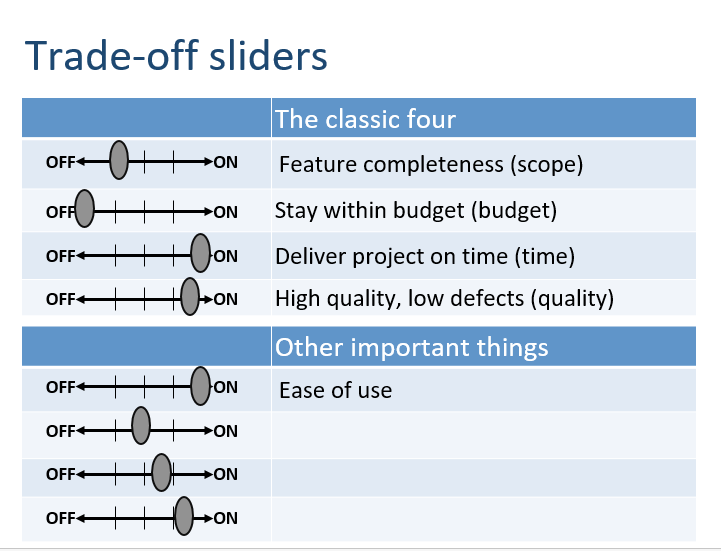
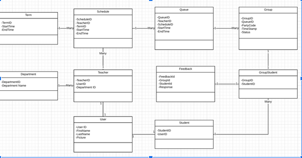
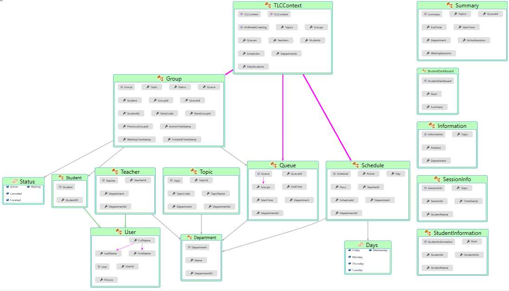

The decision behind selecting our chosen architecture of ASP.NET MVC with Entity Framework Code-First on .NET Core, was based on the fact the Microsoft has effectively deprecated .NET Framework by encouraging developers to choose .NET Core whenever possible. Following this, Web Forms is unsupported by ASP.NET Core, forcing us to go with MVC. While this decision limited the libraries we could use due to them lacking .NET Core support, we never actually encountered this problem. As far as the database was concerned, the fact that we were starting with a fresh database enabled us to be comfortable using Entity framework Code-First, which also happens to be more compatible with version-control. These topics were investigated during our technical assessment. For testing our architecture, the most popular solution in .NET is xUnit which we used in conjunction with Moq for both unit tests and integration tests. We did not encounter any issues with this approach.
The TLC system is divided into 4 tiers: the data tier, logic tier, presentation tier and authentication tier. The data tier in the database is split among Clara (physically located at the ministry) and the local database on the production server. The data is consumed by the logic tier residing on the production server which processes requests sent from the presentation tier which runs on the client. Lastly, the application is integrated with AMS from the production server.
The focus for our system was to optimize the quality of the user experience. As such, we traded scope for ease of use and quality, with strict adherence to our time schedule due to the existence of a hard deadline. The reason for focusing on user experience was that it needed to be appealing and non-intrusive enough to make users want to use it, in lieu of attempting to bypass it.

Our initial design was designed to be as broad as possible, in order to support any future extensions. Since then, we have removed entities and relationships in order to simplify the flow for the features that have actually been included in the project. Our class model previously accounted for a notification system, and a feature-set surrounding group sessions. Both of these features have been cancelled, simplifying our schema design significantly.


There were two unexpected ethical constraints which appeared during the project. The first was a privacy issue related to showing the names of people in the queues to other students, and another concerning showing all data to Academic Services. The first would impact students who felt judged by their need to seek help. It was decided that it was best to hide this information from other students, and limit their view to the numeric length of the queue. The second issue revolved around the teacher’s union wanting to maintain control of what data they revealed to academic services. The system ensures that only teachers have access to the full data, and choose what they wish to forward to Academic Services at their own discretion.
As part of the Computer Science program, I took a statistic course which covered the topics such as statistical analysis and probability. Statistical analysis is the process of drawing from samples to find trends and scrutinize significance.
For the statistic course, we had to apply statisical analysis to various situations split over three reports covering probability, hypothesis testing and frequency distributions. The full reports are available: 1, 2, 3.